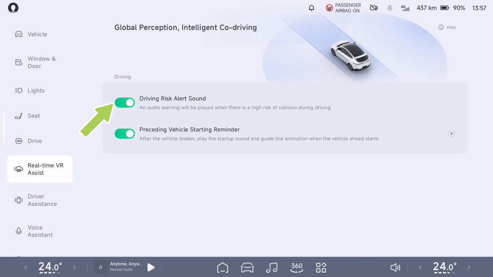
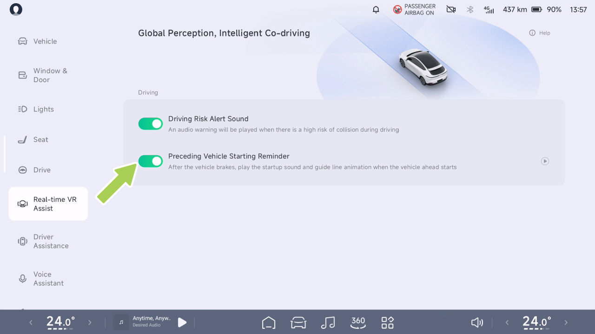

Asistencia de Realidad Virtual en Tiempo Real
Real-time Virtual Reality Assist
Visualización de simulación del entorno SR
advertencia
Introducción
El SR no funciona en los siguientes escenarios:
El sistema utiliza sensores para detectar las condiciones de la carretera exterior y el estado actual del vehículo, y muestra información en tiempo real, como otros participantes de la vía, en el cuadro de instrumentos y en la CID, creando así una interfaz de visualización virtual centrada en el vehículo.
• Cámara restringida
• El vehículo circula por una curva pronunciada o en malas condiciones de la carretera.
El SR puede presentar las siguientes situaciones:
advertencia
• Sonido de alerta de riesgo de conducción
La interfaz del SR incluye las siguientes funciones:
• Un objeto de un tipo se muestra incorrectamente como un objeto de otro tipo.
• Recordatorio de arranque del vehículo precedente
• Muestra un objeto en la dirección equivocada, simulación de distancia.
• Recordatorio de luz verde para arrancar
Advertencias, precauciones y limitaciones
advertencia
Las advertencias, precauciones y limitaciones anteriores no cubren todas las condiciones que pueden afectar el funcionamiento normal del SR.
El SR es únicamente una función de asistencia a la conducción y usted, como conductor del vehículo, es responsable de la seguridad en la conducción y no debe confiar en esta función para controlar el vehículo, ya que podrían producirse lesiones o la muerte.
Real-time Virtual Reality Assist
Sonido de alerta de riesgo de conducción
Funcionamiento
Introducción
Cuando el sistema de asistencia a la conducción no está activado y el vehículo está en posición D, si los obstáculos dinámicos del entorno se acercan al vehículo o existen posibles riesgos de seguridad, la interfaz del SR emitirá una advertencia.
La advertencia de obstáculo de riesgo medio se pondrá roja, y la de riesgo alto también se pondrá roja con un sonido de aviso.
En la CID, vaya a la interfaz “ →Real-time VR Assist”, y podrá activar o desactivar el “Sonido de alerta de riesgo de conducción”.
Advertencias, precauciones y limitaciones
La función de Sonido de alerta de riesgo de conducción solo se utiliza para advertir, y el conductor tiene la responsabilidad de observar el entorno circundante y tomar decisiones en consecuencia.


Real-time Virtual Reality Assist
advertencia
Funcionamiento
Es posible que no se active una alerta de peligro de la marcha en las siguientes situaciones. Esto incluye, entre otros:
• Radar o cámara restringidos.
• Circulación por una superficie de carretera con una curva pronunciada.
• Al circular por superficies de carretera en malas condiciones y circunstancias.
Las advertencias, precauciones y limitaciones anteriores no cubren todas las situaciones que afectan el funcionamiento normal de la función de Sonido de alerta de riesgo de conducción.
En la CID, vaya a la interfaz “ →Real-time VR Assist”, y podrá activar o desactivar el “Recordatorio de arranque del vehículo precedente”.
Recordatorio de arranque del vehículo precedente
Cuando el ADAS no está activado y el vehículo está en posición D, si se encuentra en un tramo de carretera congestionado y el vehículo precedente se aleja una cierta distancia, la interfaz del SR mostrará un efecto de animación y reproducirá un sonido de aviso para recordar al conductor que arranque.
Introducción
Advertencias, precauciones y limitaciones
La Alerta de Arranque Delantero puede no activarse si:
advertencia
• Hay peatones, bicicletas, motocicletas, etc. delante de usted.


Asistente de Realidad Virtual en Tiempo Real
• No hay vehículos delante.
• El vehículo está en una marcha distinta de D.
funcionamiento de la función de Recordatorio de Arranque del Vehículo Precedente.
• La velocidad del vehículo es superior a 0 km/h.
• El vehículo de delante está a una gran distancia del vehículo de delante.
• El vehículo delantero y el trasero están detenidos durante un breve período de tiempo.
advertencia
La alerta de arranque del vehículo delantero puede inhibirse en determinadas condiciones, incluidas, entre otras, las siguientes:
• Mala visibilidad de noche.
• Mala visibilidad debido a condiciones meteorológicas adversas como lluvia intensa, nieve intensa, niebla, arena, etc.
• Luz intensa, contraluz, reflejos en el agua, contraste de luz extremo.
• Cámara restringida
Las advertencias, precauciones y limitaciones anteriores no cubren todas las condiciones que afectan al funcionamiento normal